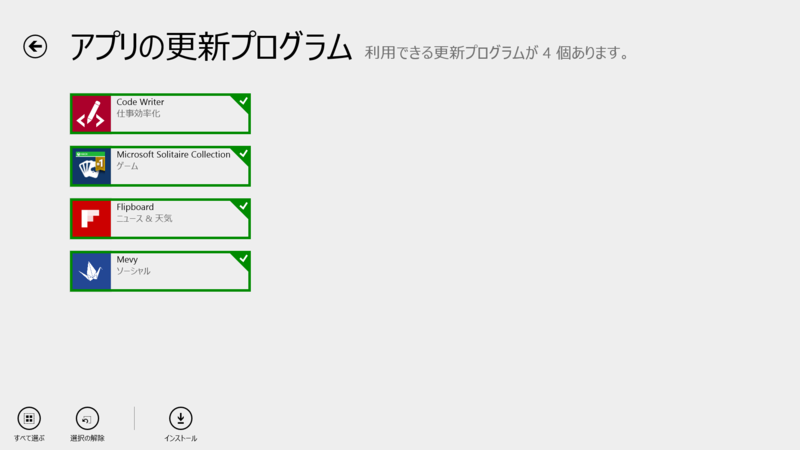
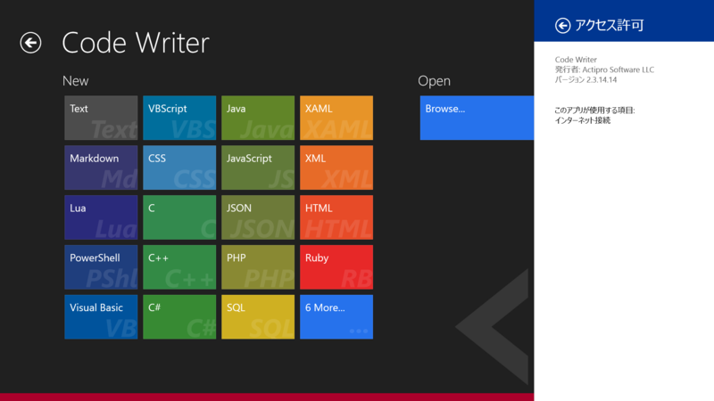
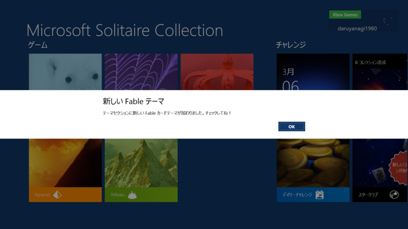
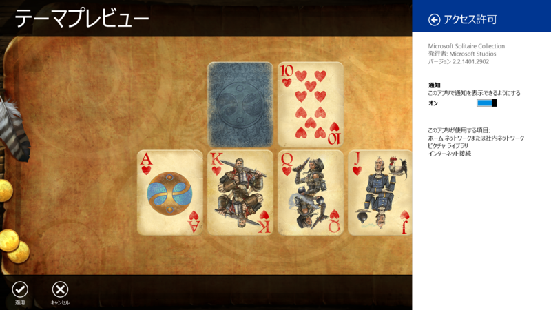
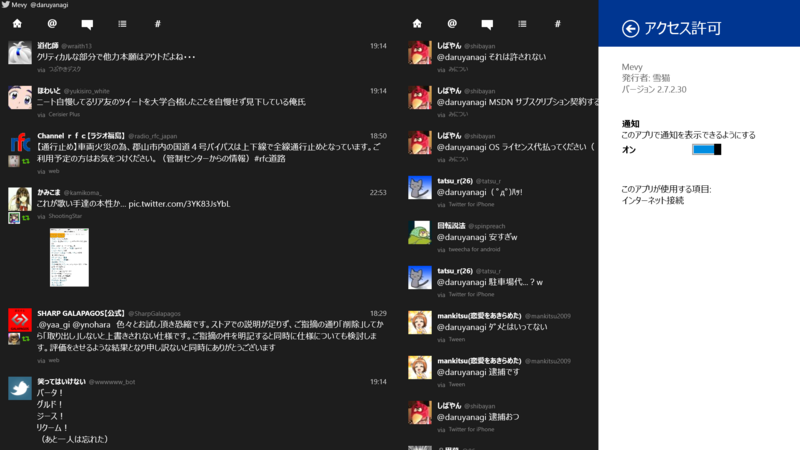

Code Writer 2.3.14.14、Microsoft Solitaire Collection 2.2.1401.2902、Flipboard 2.0.7.0、Mevy 2.7.2.30
公開日：

Code Writer 2.2.14.14 → 2.3.14.14

Version 2.3 adds more user-requested features to Code Writer:
CHANGED: Right-clicking mouse over code editor now shows a context menu. Right-click at top/bottom of screen, or left-click status bar to show app bars with mouse.
ADDED: Editor settings option for whether context menus are enabled (instead of showing app bars on mouse right-click).
ADDED: JSON file type.
ADDED: Completion lists via Ctrl+Space to the JavaScript file type.
ADDED: Improved delimiter auto-completion logic.
ADDED: Block indent mode retains whitespace after the caret when Enter is pressed.
ADDED: Ability to change character encoding for the current document via the Document Properties pane.
ADDED: General settings option for analytics (error/anonymous usage stats) reporting.
ADDED: .log and .srt files open with text file type.
ADDED: .ass and .ssa files open with INI file type.
FIXED: Documents saved with char encodings may not completely clear old file contents.
日本語が入力できたらなぁ……。
Microsoft Solitaire Collection 2.2.1401.2720 → 2.2.1401.2902
- Windows 8.1 に対応!
- バグの修正および最適化
- ご意見、ご感想をお聞かせください。Xbox フォーラムにて募集しております。
リリースノートはテンプレだけど……

今回のアップデートで Fable カードテーマが追加されたらしい。

fable
【名詞】【可算名詞】
1(動物などを擬人化して教訓を含んだ)寓話(ぐうわ) 《★【類語】 fairy tale [story] は子供のための妖精・魔法などの話》.
用例
Aesop's Fables イソップ物語.
2【不可算名詞】 [具体的には 【可算名詞】] 作り話，作り事.
3[集合的には 【不可算名詞】] 伝説，説話，神話.
【語源】
ラテン語「話されること」の意; 【形容詞】 fabulous
なるほど。中世の革本のようなイメージ。
Flipboard 2.0.6.0 → 2.0.7.0
リリースノートはないっぽい。多分今回のアップデートとは関係ないけど、Flipboard Acquires Zite | Inside Flipboard なのだそうだ。
Mevy 2.7.1.29 → 2.7.2.30

[2014/03/05] v2.7.2.30
認証と認証情報削除のボタンを設定コントラクトへ移動
「MetroTwit」亡き今、君の Twitter クライアントとしての立場は重要性を増している。